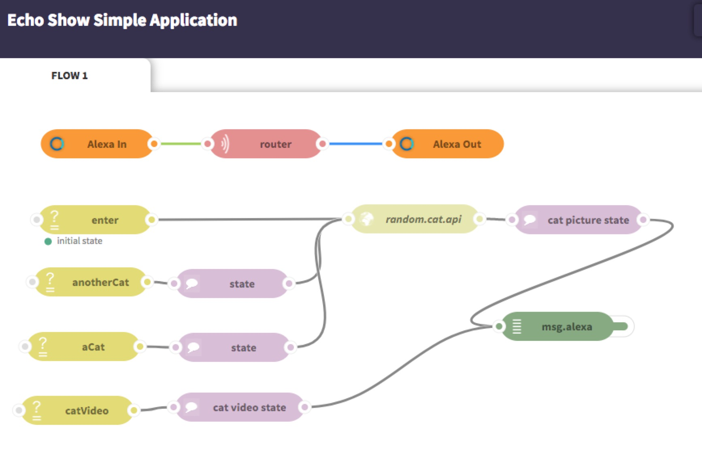

Alexa Echo Show Skill Tutorials¶
Table of Contents
Introduction¶
In this tutorial, we will introduce how to configure a ChatFlow app to create a simple Alexa skill that shows a cat picture or a cat video.
By the end of this tutorial, you will be able to display a cat picture or video on the Echo Show.
Here is an example of the skill in action:
Create a Meow Alexa skill¶
1. Create the Echo Show simple application chatflow app¶
Go to ChatFlow and create a new application using the sample application “Echo Show simple application”:
This app listens on incoming message sent from your Echo device through the Alexa In node and replies it with the Alexa Out node, and the reply messages will display a cat on Echo Show.
2. Create Alexa Interaction Model¶
Intent Schema¶
The Intent Schema will contain only user-defined intent and slot. If you need any Amazon default intent, please manually add them.
{
"intents": [
{
"intent": "AnotherCatIntent"
},
{
"intent": "ShowCatPictureIntent"
},
{
"intent": "ShowCatVideoIntent"
}
]
}
Sample Utterances¶
Sample utterances are all utterances in the project, with intents marked within utterances. It follows the old verbose style, and you can migrate to new improved interfaces.
ShowCatPictureIntent show me a cat
ShowCatPictureIntent I want a cat picture
ShowCatPictureIntent could you please give me a cat picture
ShowCatPictureIntent a cat picture please
AnotherCatIntent next
AnotherCatIntent I want another one
AnotherCatIntent next one please
AnotherCatIntent can you give me another one
AnotherCatIntent continue
AnotherCatIntent I want another one
ShowCatPictureIntent give me a cat
ShowCatVideoIntent show me a cat video
ShowCatVideoIntent can you give me a cat video
ShowCatVideoIntent play a cat show
3. Create an Alexa skill¶
- Log in to Amazon developer console and click “ALEXA” to get started with the Alexa Skills Kit:

Skill Information¶
- In Skill Information, pick a skill name and invocation name, and select Yes on Audio Player, Yes on Video App and Yes on Render Template:
- In Interaction Model, input Intent Schema you got, and then click add missing intents button and Add Pause/Resume intents button:
- In Sample Utterances, input Sample Utterances you got.


Test¶
- Test your application before deployment. Simply input “show me a cat” to inspect the output from your Chatflow app.
Finishing up¶
- Fill in the forms from Publishing Information and Privacy & Compliance*.
Warning
Do not click “Submit for Certification”.
- Open up your Alexa companion app from cellphone. Under “Your skills”, you should see your Copy Cat skill.
Note
Unpublished skills are only available to you!
Picture and video display explained¶
The msg.alexa.directives variable¶
msg.alexa.directives, if present, holds an array of directives, which is the directive used to display content or play audio and video on Echo Show.
- To display image, text on screen of Echo Show, you can use Display.RenderTemplate directive.
- To play video on the screen on Echo Show, you can use VideoApp.Launch directive.
- To play audio on the screen on Echo Show, you can use AudioPlayer.Play, etc. directive.
For example, to display a picture, we set msg.alexa.directives with the following code.
msg.alexa.directives = [
{
"type": "Display.RenderTemplate",
"template": {
"type": "BodyTemplate1",
"token": "cat",
"title": "A cat.",
"backgroundImage": {
"sources": [
{
"url": "https://random.cat/i/pimgpsh_thumbnail_win_distr.jpg",
"size": "X_LARGE"
}
]
},
"textContent": {
"primaryText": {
"type": "RichText",
"text": 'Here is a cat.'
}
}
}
}
]
msg.payload = 'Here is a cat.';
To display a video, we set msg.alexa.directives with the following code.
msg.alexa.directives = [
{
"type": "VideoApp.Launch",
"videoItem":
{
"source": 'https://zufang.bj.bcebos.com/v1/%E8%BF%90%E8%90%A5%E7%B4%A0%E6%9D%90/cat3-1506654465115.mp4',
"metadata": {
"title": "Here is a cat video",
"subtitle": "Here is a cat video"
}
}
}
];
msg.alexa.shouldEndSessionDisallowed = true;
Note
we set msg.alexa.shouldEndSessionDisallowed = true;, because the response to display a video on a echo show shouldn’t include a shouldEndSession key.
Note
for now, we only support Display directives, Video directives and Audio directives. So if you use Dialog Directives or Delegate Directives, something may go wrong.